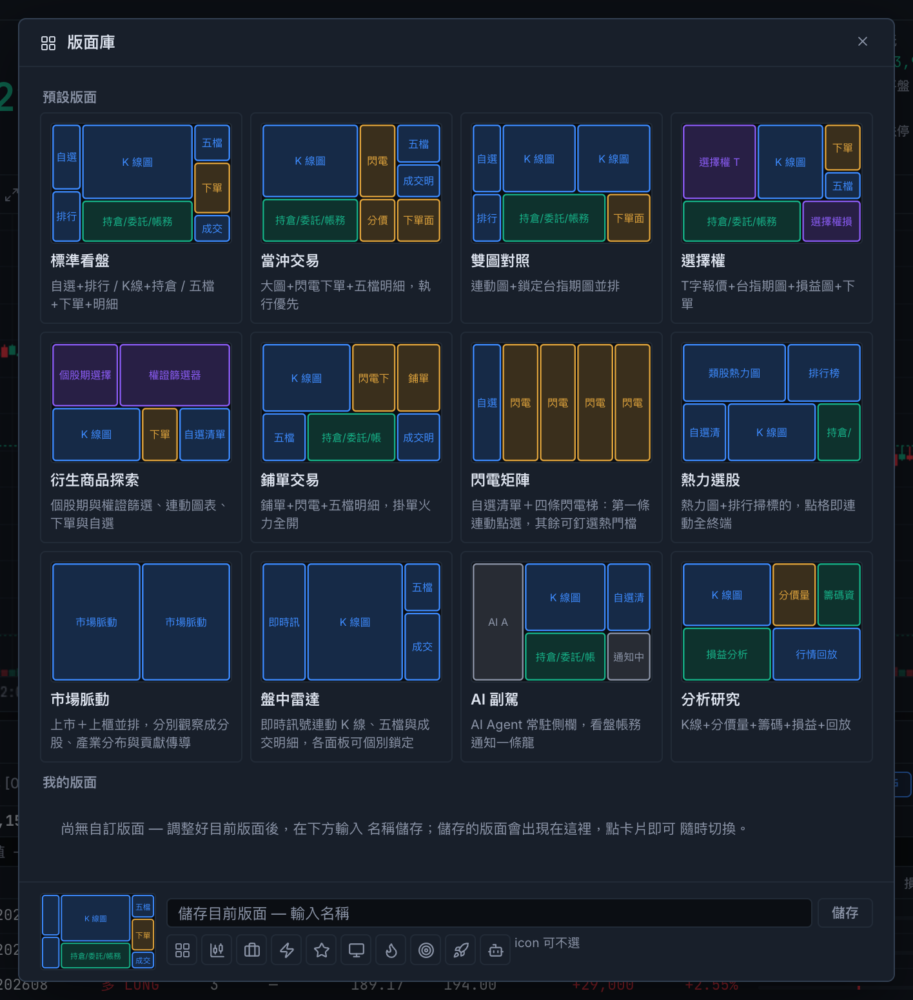
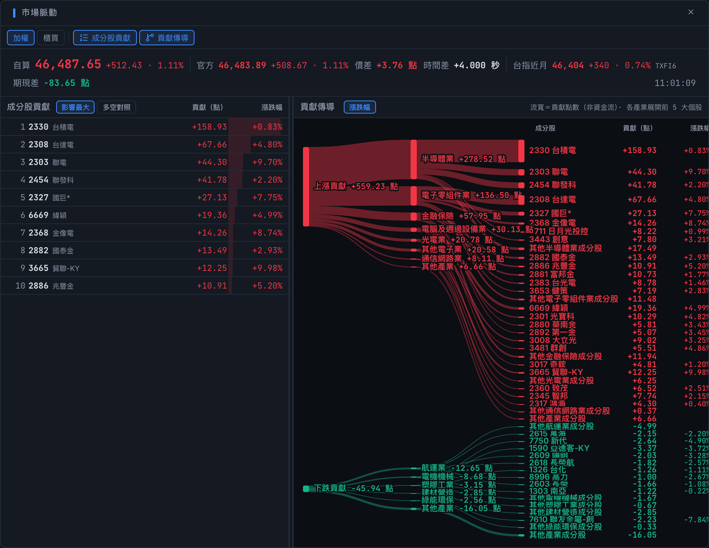
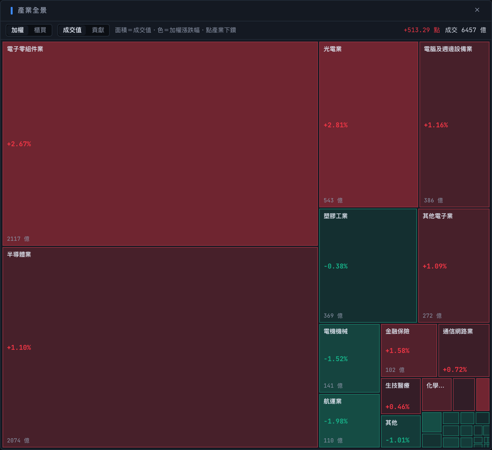
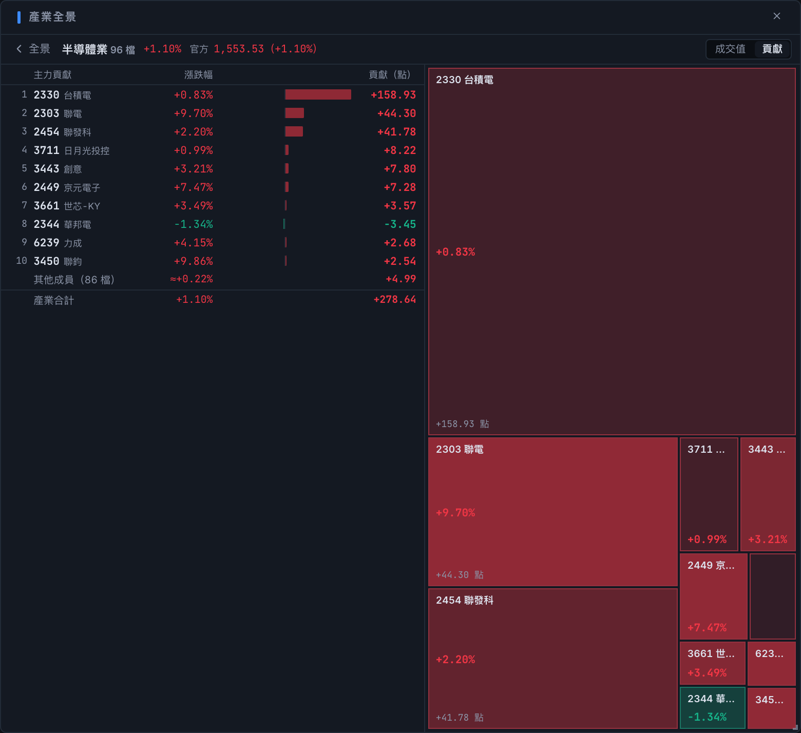
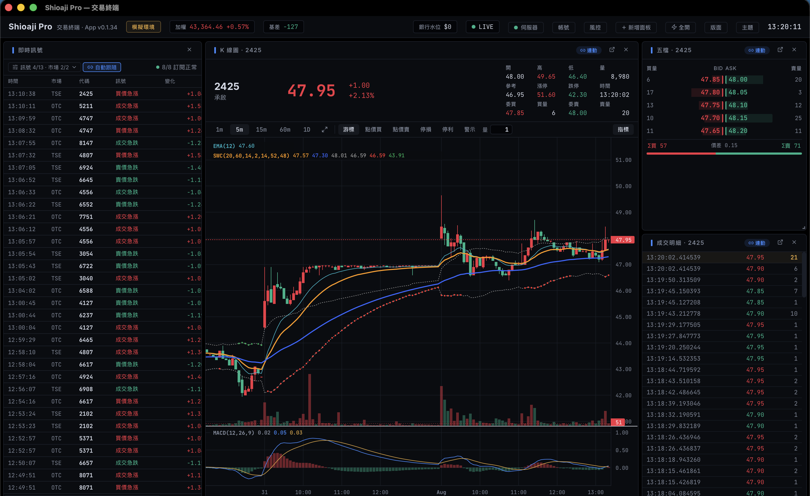
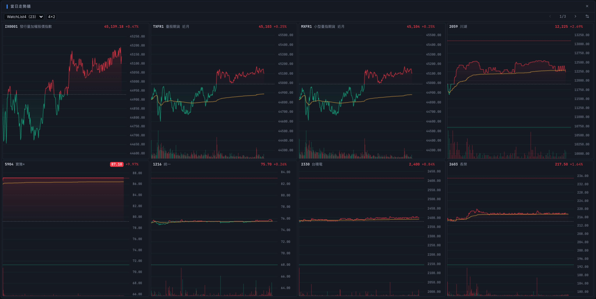
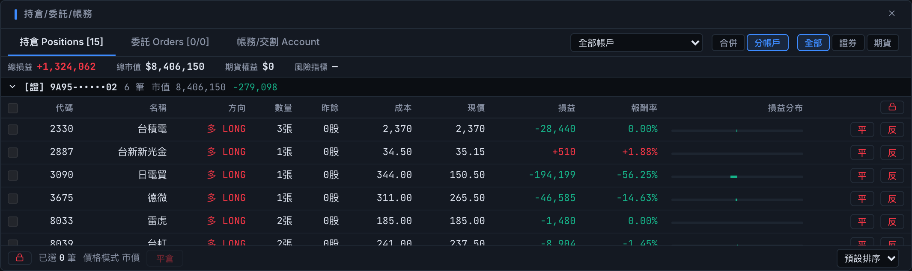
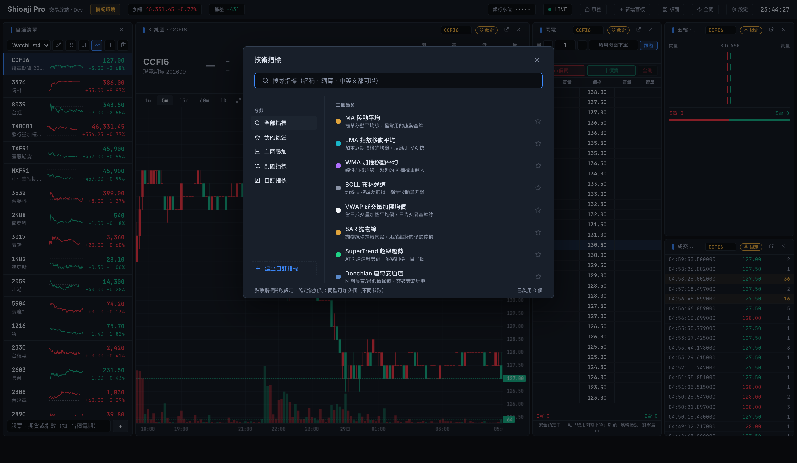
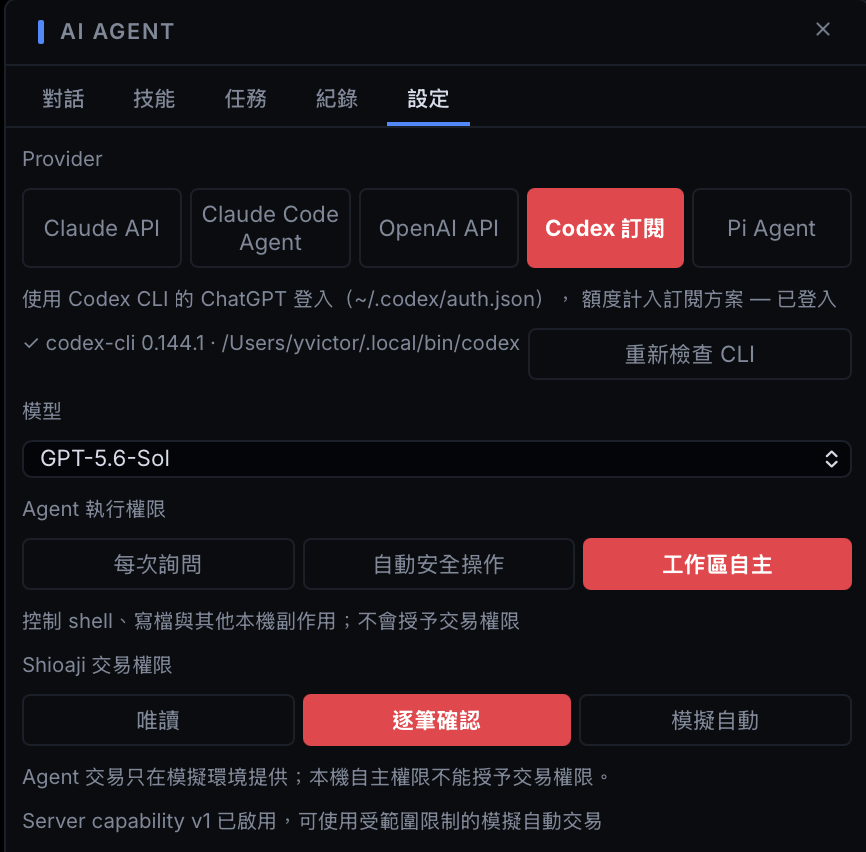

01 描述你的想法
告訴 Agent 想觀察的訊號、進出場條件與參數，由 AI 建立 App 原生指標或策略，依驗證回饋修正。
專業交易終端，原生 Agent 工作區。
台股、期貨、選擇權。
自訂工作區、專業下單與 AI 策略研究。
macOS · Windows · Linux

把每天會用到的工具，放在順手的位置。

拖放、縮放、多開面板；看同一檔商品時同步連動，研究不同標的時各自鎖定。把面板移到另一個螢幕，再將配置命名儲存。
市場脈動，直接展開到產業與成分股。

官方指數、自算指數與期現差放在一起看。沿著貢獻傳導圖，從產業找到影響指數的主要個股。
從整個市場的分布，走進單一產業。


用面積比較成交值或指數貢獻，用顏色看加權漲跌。點進產業，再看主要個股排行與貢獻磚牆。
盤中雷達、排行榜與連動看盤。

篩選上市櫃訊號與市場條件，讓 K 線、五檔和成交明細跟著切換。搭配漲幅、成交量與成交額排行榜，找到下一個要追蹤的標的。
K 線、當日走勢與多商品走勢牆。

在 K 線與分時走勢之間切換，對照價格、VWAP 與成交量。用走勢牆同時追蹤多個商品，再連動到單一商品的詳細畫面。
點價委託、快捷刪單與持倉損益在同一處。
多檔鋪單支援動態跟隨，送出前確認風控設定。
組合到價監控：設定目標價，符合條件時自動嘗試 IOC 委託。


以上為桌面版實際畫面。手動正式下單會動用真實資金；組合單不支援模擬環境。
交易前確認，交易中控管，交易後核對。

合併或分帳戶查看持倉與回報，核對損益、額度和交割。透過單筆與日虧上限、鎖單及 OCO 停損停利，管理委託流程。
用對話建立指標與進出場規則，
再用歷史資料回測驗證，讓 AI 協助解讀結果。

「用 20／60 均線交叉建立策略，
把週期與停損設成可調參數。」
告訴 Agent 想觀察的訊號、進出場條件與參數，由 AI 建立 App 原生指標或策略，依驗證回饋修正。
在回測面板選擇商品、期間與成本假設，執行後查看績效與逐筆交易。批次回測為各商品獨立測試。
請 AI 讀取最新回測結果、核對成本與交易明細，再調整策略。結果查詢工具本身不會啟動回測。
回測與損益試算基於歷史資料或簡化假設，不代表未來績效。
Codex、Claude Code 與 Pi Agent 原生整合。
在 App 內完成安裝、登入、模型選擇與連線測試。
查詢 App 行情與帳戶資料，建立原生格式的指標、策略，依驗證結果修正內容。
保存、續接與分支對話，搭配技能、工具執行紀錄及背景任務。
讀取最新回測的參數、成本與績效摘要，分頁查看各商品結果及交易明細。


描述你想要的訊號與交易條件，由 AI 建立可調整的原生指標與策略。在回測面板納入手續費、稅與滑價驗證，再請 Agent 讀取最新結果繼續研究。
React、TypeScript 與 lightweight-charts。
從面板配置到串流與下單介面，直接查看實作。
Web 介面以 AGPL-3.0 開源；桌面層與 AI Agent 為專屬功能。
內建 Shioaji Server、自動更新與伺服器管理。
安裝後，先從模擬環境開始。
13.3 以上 · Apple 簽章與公證
Apple Silicon .dmg Intel .dmgx64
安裝程式 .exe Windows Installer .msix86_64
AppImage .AppImage Debian / Ubuntu .deb RHEL / Fedora .rpm下載連結預設開啟 GitHub 最新版本頁。
01 安裝桌面版下載符合系統與處理器的安裝檔。
02 設定 API Key至 永豐金證券 申請，於 App 內完成伺服器設定。
03 連線模擬環境尚未取得 API Key，也可先使用 AI 助理的設定引導。